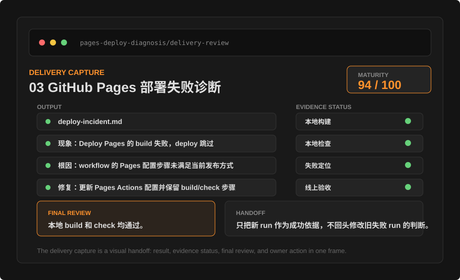

中文
实战库状态
可复核交付

专业任务标准
每篇文档都包含范围、前置条件、流程、交付物、风险控制和验收标准。
双语分区
页面先呈现完整中文，再呈现完整英文，适合学习、培训和维护。
可验证交付
强调测试、截图、diff、清单和人工 Review，而不是只追求生成速度。
安全治理
文件、命令、网络、凭据和团队规则统一纳入审批与复盘。
这份文档如何达标
每篇页面都以任务仪表盘的方式呈现：目标、入口、材料、过程、证据、风险和验收。读者能直接照着流程完成一次可复查的工作。
44 个双语页面
首页、教程、配置、案例和资源页全部生成双语内容。
17 节系统教程
覆盖桌面端、CLI、IDE、项目规则、沙盒、云端任务和排障。
14 个工具实测案例
覆盖演示稿、浏览器检查、部署排障、知识库、表格、日志诊断和服务健康检查。
自动质量检查
验证链接、双语覆盖、验收标准和禁用关键词。
像真实工作台一样交付
案例页不只告诉你应该怎么做，还把可打开的演示文件、证据表、结果片段和复跑步骤一并交付。读者可以先审材料，再迁移到自己的任务。
每个案例生成输入任务单、证据 CSV、结果片段、验收 runbook、执行转录、交付预览、前后对比、质量评分、操作回放、人工交接、现场图、验收总账、交付截图和证据看板。
按时间记录范围锁定、环境核对、证据采集和终审判断。
每篇都保留可复跑命令、人工检查步骤、失败修正和风险边界。
按手头任务直接进入
不是所有读者都需要从第一章开始。先判断你手上是失败截图、网页、资料文件还是发布任务，再进入对应案例。
我有失败截图、日志或线上异常
先看发布、日志和远程健康检查案例，学习如何锁定第一信号、保留证据、给出最小修复。
我需要检查页面、截图或登录态信息
用页面巡检、截图转规格和登录态只读检查，把视觉问题与禁止动作拆开。
我有文档、表格或知识库要整理
优先看证据表、表格清洗和 Markdown 重整，把原始行号、页码和待补项保留下来。
我要交付内容、发布说明或定期检查
用演示稿、发布说明和自动化案例，把交付物、人工确认和停止条件写清楚。

把一次任务做成闭环
高质量任务由说明、探索、实施、验证和复盘组成。没有验收证据的任务不应被视为完成。

精选实战场景
案例库不再是提示词清单，而是工具实测复盘。每篇都写清楚环境、步骤、证据、结果、踩坑和可复用任务单。
English
Recipe Library
Reviewable Delivery
Codex Everyday Guide
A practical Codex knowledge site for everyday users, creators, individual developers, and small teams. The site uses a dark product interface for guides, configuration, tool-tested recipes, and safety acceptance.
Professional task standard
Every page includes scope, prerequisites, procedure, deliverables, risk controls, and acceptance criteria.
Separated bilingual sections
Each page presents the complete Chinese section first, followed by the complete English section for learning, training, and maintenance.
Verifiable delivery
Emphasizes tests, screenshots, diffs, checklists, and human review rather than generation speed alone.
Safety governance
Files, commands, network access, credentials, and team policy are handled through approvals and retrospectives.
How This Documentation Meets the Standard
Every page is presented like a task dashboard: goal, entry, materials, process, evidence, risk, and acceptance. Readers can follow the flow to complete reviewable work.
44 bilingual pages
Home, guide, configuration, recipe, and resource pages all generate bilingual content.
17 guide chapters
Covers desktop, CLI, IDE, project rules, sandbox, cloud tasks, and troubleshooting.
14 tool-tested recipes
Covers decks, browser review, deployment diagnosis, knowledge bases, spreadsheets, log troubleshooting, and service health checks.
Automated quality checks
Validates links, bilingual coverage, acceptance criteria, and forbidden terms.
Delivered Like a Real Workbench
Recipe pages do more than explain what to do: they deliver openable demo files, evidence tables, result samples, and rerun steps. Readers can inspect the material before adapting it.
Every recipe generates an input brief, evidence CSV, result sample, acceptance runbook, execution transcript, delivery preview, before/after file, quality scorecard, operation replay, human handoff, field snapshot, acceptance ledger, delivery capture, and evidence board.
Records scope lock, environment check, evidence capture, and final review by time.
Each page keeps rerunnable commands, manual checks, corrections, and risk boundaries.
Jump in by the Task at Hand
Not every reader should start from chapter one. Decide whether you have a failure screenshot, web page, file set, or shipping task, then open the matching recipes.
I have a failure screenshot, logs, or a live incident
Start with deployment, log, and remote health recipes to lock the first signal, preserve evidence, and propose the smallest fix.
I need to review a page, screenshot, or signed-in view
Use page review, screenshot-to-spec, and signed-in read-only review to separate visual issues from prohibited actions.
I have documents, spreadsheets, or notes to organize
Start with evidence tables, spreadsheet cleanup, and Markdown restructuring while preserving row numbers, pages, and missing items.
I need to ship content, release notes, or scheduled checks
Use deck, release-note, and automation recipes to define deliverables, human confirmation, and stop conditions.
Choose the Right Entry Point
Codex capabilities appear across App, CLI, Cloud, IDE, ChatGPT, and integrations. A professional workflow chooses the entry point based on material location, risk level, and acceptance method.
Make Every Task a Closed Loop
A high-quality task includes brief, discovery, execution, verification, and retrospective. A task without acceptance evidence should not be considered complete.
Selected Recipes
The recipe library is no longer a prompt list; it is a set of tool-tested retrospectives. Each recipe documents environment, steps, evidence, results, pitfalls, and a reusable work order.
Presentation work
01 Deck Generation and Export Verification
Generate a seven-slide deck from a redacted product brief and judge delivery with export screenshots, a slide table, and human confirmations.
Web quality02 Browser Page Review with Screenshot Evidence
Run a read-only review of a local page, recording desktop and mobile viewports, console state, screenshot evidence, and issue priority.
Deployment troubleshooting03 GitHub Pages Deployment Failure Diagnosis
Diagnose a Pages deployment issue from failure notification, Actions jobs, and local checks, then close the loop with a new run and live response.
Documentation engineering04 Local Documentation Site Redesign
Redesign a static documentation site into a dark product workspace and prove the publish chain remains intact with page count, links, screenshots, and blocked-word checks.